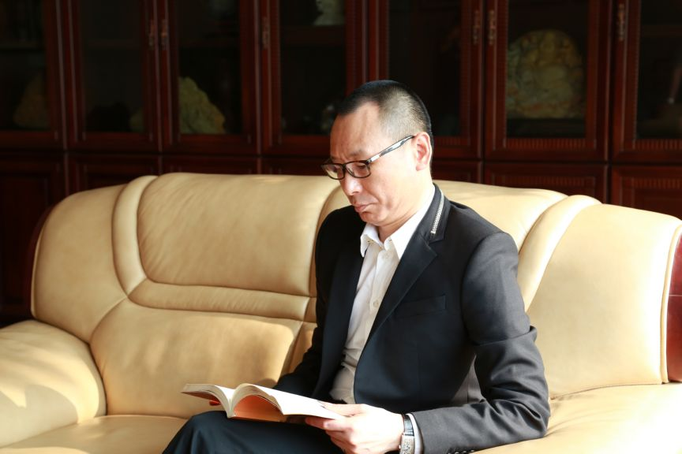
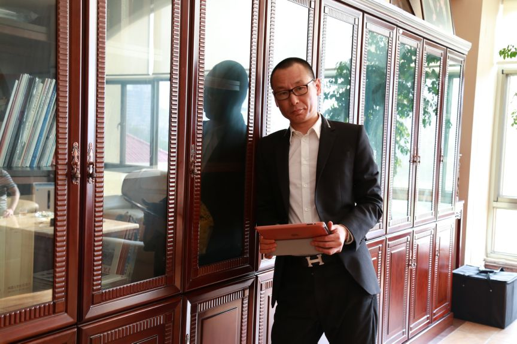

·1995-1998年 刘常楷先生在印尼创办了印尼生力公司，主营项目矿产，1998年成功上市
·1999-2000年 刘常楷先生在新加坡扩张集团业务
·2001-2011年 刘常楷先生足迹遍布全球一百多个国家，不断的收集遗失国外的中国文物与藏品，也逐渐形成了爱国的价值观
·2012年 刘常楷先生加入到美国华人社团联合总会，美国中华总商会，回国之后从事中国中小企业综合服务平台，并创立福建省鑫全地产发展有限公司
·2013年 刘常楷先生响应党中央号召，成立平潭综合实验区创鸿贸易有限公司、平潭综合实验区明锦电子科技有限公司、平潭综合试验区创鸿再生资源利用有限公司
·2014年 刘常楷先生在北京成立北京兆通置地商业保理有限公司、北京兆通置地影视传媒有限公司
·2015年 刘常楷先生创办中国万企投资管理公司，成功落地郑州、沈阳、山东、广州、福州；
同时成立福建兆亿文化传播有限公司

美国华人社团联合总会会长，美国中华总商会常务副会长，旗下企业的董事长兼CEO
印尼生力集团
中国万企投资管理公司
中国中微小企业综合服务平台
福建省鑫全地产发展有限公司
福建兆亿文化传播股份有限公司
北京兆通置地商业保理有限公司
北京兆通置地影视传媒有限公司
平潭综合实验区创鸿贸易有限公司
福建中州皇冠贸易进出口有限公司
平潭综合实验区明锦电子科技有限公司
平潭综合试验区创鸿再生资源利用有限公司
福建省海峡两岸快件管理有限公司
刘常楷先生，1972年5月5日出生于福建省平潭县。从小刘先生就是个懂事聪明的孩子，喜欢学习，成绩优异。参加工作之后，刘先生吃苦耐劳，广交好友。
1993年，年轻的刘先生开始创业。创新的思维、独立的思想，让他的生意兴兴向荣。1995年，23岁的刘常楷先生走出国门，在印尼创办公司。在一次朋友的聚会中，刘先生看到一件极其珍贵的中国文物古玩放置在外国人的家中竟不被重视，爱国之心，激起了他想要将遗失在国外的中国文物及藏品找回的心愿，并立下了终生的诺言“永爱中华，此志不渝”！
随着公司的蓬勃发展，刘先生的事业越来越壮大，也逐渐具备了实现自己诺言的能力。旁人经常会听到挂在刘先生嘴边的的一句话“弘扬中华文化，传承民族精神，既然爱国就要付诸行动”，为了这句话，为了自己的心愿，为了许过的诺言，刘先生的足迹遍布全球一百多个国家，追讨回祖国大量的文物与藏品，归来的路程虽然艰辛并漫长，但一切都是值得的!

刘常楷先生的藏品从质量、数量上讲都是空前的，藏品的数量多达上万件，包含了瓷器、字画、雨花石、茶叶、酒。其中大部分藏品是张大千、齐白石、刘墉、唐伯虎、黄挺间、徐悲鸿、王大川等著名作家的作品。
旗下企业简介
福建兆亿文化传播股份有限公司成立于2015年7月，至成立之初就致力于中国历代文物收藏及艺术品文化投资，是国内历代瓷器、字画收藏领域最具实力的公司之一。
目前，我公司与海内外上百家集团和机构保持着良好的合作，所属公司名下的收藏品十余万种，主要以历代瓷器、字画、玉器、邮票、纪念币等为主，其中大部分藏品是张大千、齐白石、唐伯虎、黄挺间、郎世宁、吴道子、赵孟頫等名作。 公司发挥自身优势，采用参展、拍卖会、互联网等多渠道进行推广，以满足社会各界不同阶层的人群。
公司总裁刘常楷先生却有由1995年开始长达20年的艺术品收藏史，公司正在以刘总的带领下奋力前行的状态“战斗”着，突破收藏品行业现状，有更新的发展！打造收藏文化的先河是公司永远的奋斗目标，并将一直坚持不懈的保持收藏者的虔诚、从业者的认真、发展者的虚心、成功者的前瞻。
抱定信念，把收藏文化传播作为本公司的终身事业。同时我们致力于打造一支团结、高效、创新、日益进取的团队。专业化的职业技能培训和透明的激励机制，造就了高素质的团队。公司实施人性化管理，公司会提供机会，出资扶持其参加北京大学办学的工商管理研修班等课程，为员工创造了更高的成长空间。公司与员工积极努力，开拓进取，为我们的未来奋斗！